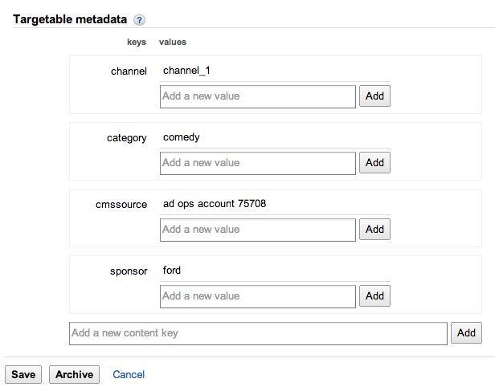
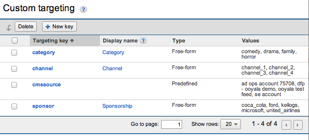
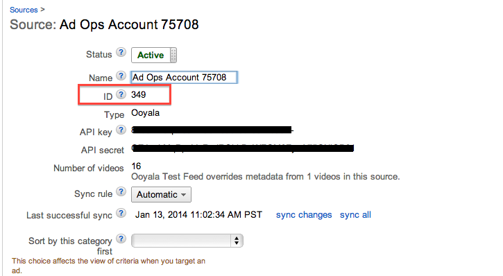

<script language=“javascript" src="url_where_hosted/google_ima.min.js"></script>
| Field | Description |
|---|---|
| Ad Set name | Enter a name for the ad set. |
| Ad Tag | Enter your Google IMA tag here. This is available from your DFP, Adxchange, or Adsense account. See below for an example. |
http://123fakeads.g.doubleclick.net/gampad/ads?sz=400x300&iu=%2F6062%2Fiab_vast_samples&ciu_szs=300x250%2C728x90&impl=s&gdfp_req=1&env=vp&output=xml_vast2&unviewed_position_start=1&url=[referrer_url]&correlator=[timestamp]&cust_params=iab_vast_samples%3Dlinear
<script language=“javascript" src="url_where_hosted/google_ima.min.js"></script>
Here is an example of how to override an ad set in the Google IMA ad manager on your web page. If you want to replace the Ad Set attached to your video (from Backlot), or if it does not have an IMA Ad Set already associated with it, you will replace "yourAdTagUrl" with the actual Google IMA ad tag containing the response. Otherwise, you may leave it out.
<script>
var playerParam = {
"pcode": "YOUR_PCODE",
"playerBrandingId": "YOUR_PLAYER_ID",
"skin": {
// Config contains the configuration setting for player skin. Change to your local config when necessary.
"config": "url_where_hosted/skin.json"
},
"google-ima-ads-manager": {
"all_ads": [
{
"position_type":"r",
"tag_url":"http://pubads.g.doubleclick.net/1234567/ads?sz=640x480&iu=/12345/pb_preroll_ad&ciu_szs&impl=s&cmsid=123&vid=1234567abcdefg&gdfp_req=1&env=vp&output=xml_vast2&unviewed_position_start=1&url=[referrer_url]&description_url=[description_url]&correlator=[timestamp]"
}
]
}
};
OO.ready(function() {
window.pp = OO.Player.create("container", "YOUR_ASSET_ID", playerParam);
});
<script>
Here is a more complete example of Google IMA integration that will work for HTML5. The
player branding_id of a player and the embed code of an asset can be found in the Embed tab
on the MANAGE page of Backlot. <!DOCTYPE html>
<html>
<head>
<title>Google IMA Example</title>
<!-- V4 JS core is required. Plugins such as skin, discovery and Advertising need to be loaded separately -->
<script src="url_where_hosted/core.min.js"></script>
<script src="url_where_hosted/other-plugin/discovery_api.min.js"></script>
<!-- Change these html5-skin.min.css and html5-skin.js to your local build if necessary -->
<script src="url_where_hosted/html5-skin.min.js"></script>
<link rel="stylesheet" href="url_where_hosted/html5-skin.min.css"/>
<!-- A Video Plugin is required. This example shows the Main Video Plugin -->
<script src="url_where_hosted/main_html5.min.js"></script>
<!-- Ad module -->
<script src="url_where_hosted/google_ima.min.js"></script>
</head>
<body>
<div id="container" style="width:640px; height:360px;"></div>
<script>
var playerParam = {
"pcode": "YOUR_PCODE",
"playerBrandingId": "YOUR_PLAYER_ID",
"skin": {
// Config contains the configuration setting for player skin. Change to your local config when necessary.
"config": "url_where_hosted/skin.json"
},
"google-ima-ads-manager": {
"all_ads": [
{
"position_type":"r",
"tag_url":"//pubads.g.doubleclick.net/1234567/ads?sz=640x480&iu=/12345/pb_preroll_ad&ciu_szs&impl=s&cmsid=123&vid=1234567abcdefg&gdfp_req=1&env=vp&output=xml_vast2&unviewed_position_start=1&url=[referrer_url]&description_url=[description_url]&correlator=[timestamp]"
}
]
}
};
OO.ready(function() {
window.pp = OO.Player.create("container", "YOUR_ASSET_ID", playerParam);
});
</script>
</body>
</html>
This section applies only if you are using DFP.
Before trafficking ads, if you are using DFP Premium you must first map your video content and all related custom metadata to Google's platform. To learn how to do this, see the Support Center topic Monetizing your Ooyala Content with DFP.
Custom Metadata
If your video content has been successfully ingested into DFP, all custom metadata key/value pairs should be visible in DFP's Content tab. These values may be used to target ads against particular types of content. The following screenshot, for example, is from an individual video asset from Ooyala’s test DFP account. 
Mapping Custom Metadata to DFP Keys
You have the option of creating custom targeting keys on DFP Premium. These keys are then mapped to the key/values ingested from Backlot. To create these keys, in DFP, go to , as shown below. For more information, go to the DFP help article on custom targeting.
Ad rules can define when ads are inserted, how long they should run for, what format of ads are run, and what to use as the ad source.
To enable ad rules for an ad:
OR
Ad Targeting
To enable targeting against content metadata values, Google DFP requires two values to be included on your IMA tag: cmsid and vid. Once these values are included when making ad requests, the IMA ad manager “knows” which video asset is making the request. As a result, it returns whatever ad response has been defined by the publisher’s ad operations team.
cmsid: A unique value assigned automatically by Google to each content source. To locate it within the DFP Premium platform, click on the Video tab (on the upper right), navigate to Sources and click on the source in question. The value is “ID,” as shown below: vid: A unique value for each video asset. The Ooyala-IMA integration uses Ooyala’s Content ID.
When creating the IMA Ad Manager adset, the publisher will need to append the IMA ad tag with the macro [oo_embedcode]. Here’s an example IMA Ad Manager tag with both cmsid and vid:
http://googleads.g.doubleclick.net/pagead/ads?client=ca-video-pub-9498212586027311&slotname=8286566767&cmsid=176&vid=[oo_embedcode]
"google-ima-ads-manager": {
"all_ads": [
{
"position_type":"r",
"tag_url":"//pubads.g.doubleclick.net/gampad/ads?sz=640x480&iu=/12345/pb_preroll_ad&ciu_szs&impl=s&cmsid=123&vid=1234567abcdefg&gdfp_req=1&env=vp&output=xml_vast2&unviewed_position_start=1&url=[referrer_url]&description_url=[description_url]&correlator=[timestamp]"
}
],
"additionalAdTagParameters": {
"vid": "embed code",
"cmsid": "349"
}
}
Example 1: You want to show two 60-second ad breaks during an episode of a popular TV show. The TV show has specific cue points that DFP ingested from your content management system (CMS). You can set up ad rules to specify when the ads should appear (either at the pre-defined cue points or after a certain number of minutes), what types of ads appear, and how many ads should appear during each ad break.
Example 2: For all sports videos on your website, you want to show pre-roll ads followed by a house ad (also called a bumper). You can set up an ad rule to specify what types of ads can show and how long they should run, then target the ad rule to videos with the correct metadata.
<script src="//www.googletagservices.com/tag/js/gpt.js"> </script>
<div id="cad" style="width:300px;height:250px;background-color:red">
</div>
</br>
<script type="text/javascript">
// Add a command to the command queue
googletag.cmd.push(function() { // Define the unit
var adSlot1 = googletag.defineSlot( "/5129/News/QLD", // Ad Unit Name, obtained by the provider
[300, 250],
"cad");
adSlot1.addService(googletag.companionAds());
googletag.enableServices();
// Immediately signal to show it.
googletag.display("cad");
});
</script>
<script>
var playerParam = {
"pcode": "YOUR_PCODE",
"playerBrandingId": "YOUR_PLAYER_ID",
"onCreate": function(player) {
player.mb.subscribe("*", "test", function(event, params) {
if (event.match(/willShowCompanionAds/)) {
console.log(params); // We get the companion ads from params
}
});
},
"skin": {
// Config contains the configuration setting for player skin. Change to your local config when necessary.
"config": "url_where_hosted/skin.json"
},
companionAd: {
slots: [{width: 300, height: 250}, {width: 300, height: 60}]
}
};
OO.ready(function() {
window.pp = OO.Player.create("container", "YOUR_ASSET_ID", playerParam);
});
</script>
If there are any companion ads in the XML with the defined slot sizes, you can retrieve them by listening to the WILL_SHOW_COMPANION_ADS event as demonstrated on the onCreate function code above.
{"ads":[
{
"size":"300x250",
"ad":"<Companion Ad as HTML>"
},
{
"size":"300x60",
"ad":"<Companion Ad as HTML>"
}
]}